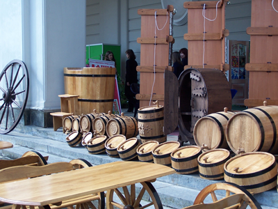

- Найцікавіші заклади:
- Всі
- Храми
- Музеї
- Ресторани
Латинський катедральний костел
Пам’ятка XIV-XVIII століть.
Львівська майстерня шоколаду
У 19 столітті шоколад зі Львова експортувався до всієї Європи.
Аптека-музей "Під чорним орлом"
Найдавніша з існуючих у Львові аптек
Костел Святої Єлизавети
Церква святих Ольги і Єлизавети – перлина неготичної архітектури.
Криївка
У підвалах площі Ринок знаходиться кнайпа, стилізована під криївку УПА.
Музей-Арсенал
Відділ Львівського історичного музею
Cобор Святого Юра
Греко-католицький архикатедральний собор Святого Юра.
Шевченківський гай
Це музей під відкритим небом, де можна ознайомитись з побутом українців.
Ресторація «Black Coffee»
Витончений смак європейської та української кухні.
Вірменський собор
Це унікальна пам’ятка східної культури на європейських теренах.

Музей пивоваріння
Перший в Україні музей пивоваріння, що був відкритий 14 жовтня 2005.